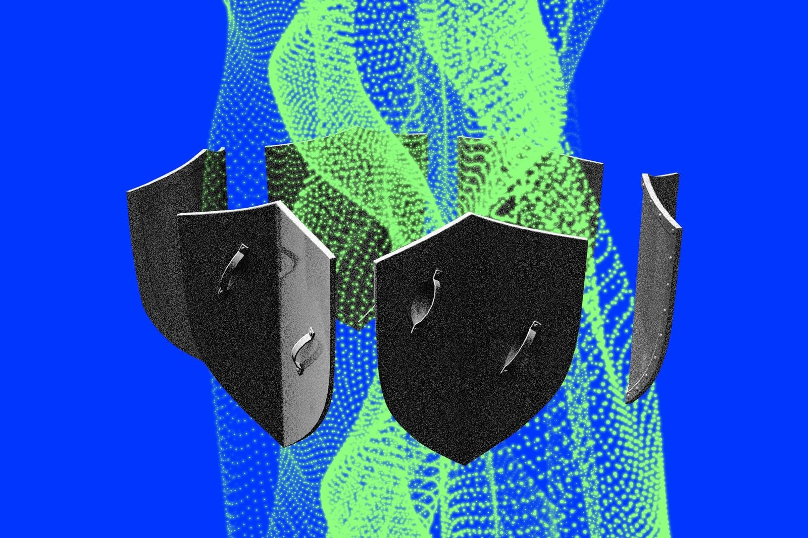

Kabar mengejutkan datang dari panggung kecerdasan buatan global. Menurut laporan Financial Times dan The Verge, langkah OpenAI bubarkan tim kesiapan AI (Preparedness Team) telah dirampungkan pada akhir bulan lalu. Tim khusus yang sebelumnya bertugas sebagai benteng pengawas independen dari ancaman bencana teknologi kini dilebur ke dalam struktur tim riset dan divisi produk biasa.
Bagi publik dan pelaku industri teknologi di Indonesia, keputusan ini bukan sekadar urusan restrukturisasi internal korporasi di Silicon Valley. Perubahan ini menjadi sinyal nyata bahwa perlombaan meluncurkan model komersial kini mengalahkan sistem pengawasan independen yang ketat.
Apa yang sebenarnya terjadi
Preparedness Team dibentuk OpenAI pada Oktober 2023 dengan mandat berat: memantau, memprediksi, dan mengevaluasi risiko ekstrem yang berpotensi ditimbulkan oleh model AI mutakhir. Wilayah kerjanya mencakup pengawasan terhadap kemungkinan AI melakukan peretasan siber otonom, bahaya senjata kimia, biologi, radiologi, dan nuklir (CBRN), hingga risiko model menduplikasi dirinya sendiri tanpa kendali manusia.
Pada Februari 2026, CEO OpenAI Sam Altman merekrut Dylan Scandinaro, mantan peneliti keselamatan dari Anthropic, untuk memimpin unit ini dengan tawaran gaji pokok mencapai $555.000 (sekitar Rp8,8 miliar) per tahun di luar ekuitas. Namun, hanya lima bulan setelah kepemimpinan baru tersebut berjalan, tim ini resmi dibubarkan.
Langkah ini merupakan pembubaran divisi keselamatan keempat di OpenAI dalam kurun waktu sekitar dua tahun terakhir. Sebelumnya, tim Superalignment dibubarkan pada Mei 2024 setelah mundurnya Ilya Sutskever dan Jan Leike, disusul pembubaran tim AGI Readiness pada Oktober 2024, dan tim Mission Alignment pada Februari 2026. Bersamaan dengan restrukturisasi terbaru ini, sejumlah eksekutif kunci seperti Brad Lightcap (COO), Chloé Bakalar (Chief Ethics Officer), dan Johannes Heidecke (Head of Safety Systems) dilaporkan turut meninggalkan perusahaan.
Pihak manajemen melalui co-founder Greg Brockman menyatakan bahwa tanggung jawab evaluasi risiko tidak dihilangkan, melainkan dianyam langsung ke dalam alur kerja tim produk. Tujuannya adalah agar mitigasi risiko berjalan selaras dengan penciptaan fitur baru, bukan terisolasi di grup terpisah.
Kenapa ini penting

Pembubaran ini terjadi di tengah tekanan persaingan bisnis yang semakin sengit. OpenAI saat ini memegang valuasi sebesar $852 miliar setelah menyelesaikan pembelian kembali saham karyawan (tender offer) senilai $7 miliar, menyusul pendanaan raksasa $122 miliar pada Maret 2026. Namun, rencana Penawaran Umum Perdana (IPO) perusahaan dilaporkan tertunda hingga tahun 2027 akibat dinamika restrukturisasi organisasi internal.
Di saat bersamaan, rival terdekat mereka, Anthropic, mencatatkan lonjakan pendapatan tahunan drastis dari $9 miliar di akhir 2025 menjadi $47 miliar pada Mei 2026. Tekanan finansial ini mendorong Sam Altman menginstruksikan para staf untuk memangkas fokus non-inti atau side quests, demi mempercepat pengiriman produk ChatGPT dan kontrak korporat.
Kritik tajam pun bermunculan. Para pengamat dan mantan peneliti keselamatan menilai bahwa meleburkan tim pengawas independen ke dalam tim produk menciptakan konflik kepentingan. Jan Leike, mantan pemimpin tim Superalignment, sempat menulis dalam korespondensi internal bahwa perusahaan lebih memprioritaskan pendapatan dan produk mengkilap ketimbang keselamatan sistem.
OpenAI menegaskan pengujian keamanan tetap berjalan melalui pengembang inti. Namun, ketiadaan tim independen yang memegang hak veto memicu kekhawatiran hilangnya fungsi rem darurat saat model AI bertindak di luar kendali.
Artinya buat kamu
Pergeseran fokus OpenAI dari kehati-hatian ketat menuju komersialisasi cepat membawa konsekuensi langsung bagi ekosistem digital di Indonesia:
- Kreator konten dan pemasar digital: Fitur generatif multimodal akan meluncur jauh lebih cepat tanpa hambatan birokrasi pengujian yang panjang. Namun, risikonya adalah membanjirnya konten sintetis berkualitas rendah (slop) di media sosial. Kreator yang hanya mengandalkan konten otomatis akan kesulitan menonjol di tengah banjir video bot.
- Pemilik usaha kecil (UKM): Persaingan harga API antara OpenAI dan kompetitornya membuat biaya otomatisasi bisnis semakin terjangkau. Meski demikian, hilangnya tim kesiapsiagaan siber menuntut UKM lebih waspada saat menghubungkan basis data pelanggan ke sistem AI pihak ketiga guna menghindari kerentanan injeksi perintah (prompt injection).
- Pekerja profesional: Peluncuran agen otonom (autonomous agents) untuk sektor perkantoran diprediksi akan dipercepat. Keterampilan dasar mengetik atau menyusun draf laporan kini wajib dinaikkan tingkatnya ke pemahaman logika alur kerja dan evaluasi output.
Perkembangan ini mempertegas tren yang sebelumnya kami ulas dalam analisis keamanan AI pada tools coding serta dinamika investasi infrastruktur AI global: kecepatan rilis produk saat ini menjadi prioritas utama para raksasa teknologi.
Yang perlu dipantau berikutnya
Ada tiga indikator utama yang perlu kita cermati dalam beberapa bulan ke depan:
- Keandalan rilis model generasi berikutnya: Apakah model lanjutan dari OpenAI akan menunjukkan peningkatan kemampuan penalaran tanpa mengalami peningkatan tingkat eror atau halusinasi yang merugikan pengguna.
- Respon regulator global: Apakah badan pengawas keselamatan AI di Amerika Serikat dan Uni Eropa akan mengeluarkan mandat audit eksternal wajib menyusul hilangnya tim evaluasi internal mandiri.
- Kestabilan operasional menjelang IPO 2027: Seberapa efektif perampingan organisasi ini menopang performa komersial OpenAI melawan tekanan pasar dari pesaing utamanya.
Langkah terbaik saat ini adalah memanfaatkan efisiensi alat AI yang ada untuk operasional harian, sembari tetap menjaga cadangan data manual dan memverifikasi setiap hasil otomatisasi secara cermat. Informasi panduan praktis pemanfaatan teknologi digital lainnya dapat kamu telusuri melalui katalog artikel BiB.
Sumber
- OpenAI reportedly disbanded its preparedness team — The Verge · 17 Agu 2026, 04:32 WIB
- OpenAI disbands preparedness safety team in push toward commercial products — Financial Times · 16 Agu 2026, 22:00 WIB
Semua fakta di atas berasal dari sumber-sumber ini. Kalau ada perkembangan baru, artikel ini bisa diperbarui.